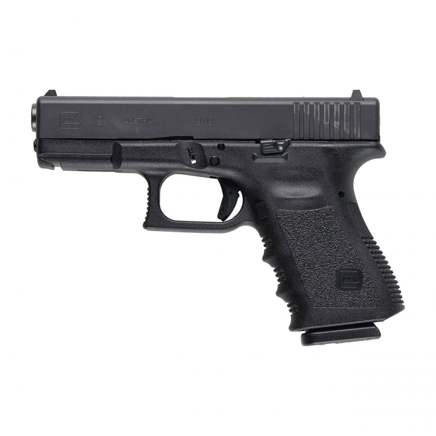

Glock 19
Wstęp
Glock 19 to półautomatyczny pistolet kalibru 9×19 mm (9 mm Luger) produkowany przez austriacką firmę Glock Ges.m.b.H. Model G19
to skrócona wersja pełnowymiarowego Glocka 17, zaprojektowana jako uniwersalny pistolet „compact” — odpowiedni
zarówno do zastosowań policyjnych i służbowych, jak i do noszenia ukrytego. Model zdobył szerokie uznanie dzięki niezawodności, prostocie konstrukcji i dużej dostępności części zamiennych oraz akcesoriów.
Czytając dalej, dowiecie się między innymi o historii tego Glocka, ale zanim przeczytacie cały artykuł, musicie wiedzieć, że informacje wziąłem z Wikipedii, materiałów
Glocka i wielu innych źródeł — długo by wymieniać. Nie mam stuprocentowej pewności co do prawdziwości podanych informacji. Miłego czytania.

Glock 19 trzeciej generacji (Gen 3) z charakterystycznymi wgłębieniami na palce w przedniej części chwytu.
Historia
Glock 19 został wprowadzony jako mniejsza, bardziej poręczna wersja G17, szybko zdobywając popularność w służbach
i w śród użytkowników cywilnych ze względu na połączenie kompaktowych wymiarów i dużej pojemności magazynka. Firma stopniowo wprowadzała
modyfikacje produkcyjne i użytkowe, które dziś opisuje się jako kolejne „generacje” GLOCK-a.
Dane techniczne (typowe wartości dla seryjnego G19)
Kaliber: 9×19 mm (9 mm Luger).
Długość całkowita: ~187 mm.
Długość lufy: ~102 mm.
Wysokość: ~128 mm.
Szerokość: ~30 mm.
Masa (bez magazynka): ~620 g (wartości zależą od wersji).
Pojemność magazynka: standardowo 15 naboi (zmienne w zależności od rynku i wersji).
(Uwagi: dokładne wartości mogą się różnić między wersjami i rocznikami; korzystaj z oficjalnych kart katalogowych przy podawaniu specyfikacji w publikacji).
Wersje i warianty G19
Glock oferował (i oferuje) wiele wariantów — różne wykończenia, oznaczenia „MOS” (Modular Optic System) dla
instalacji optyk, wersje z uproszczonymi/zmodyfikowanymi zamkami, limitowane edycje i wersje eksportowe zgodnie z przepisami różnych
rynków. Powstały też odmiany hybrydowe (np. G19X — łączący cechy Gen 5 ramy z innym wykończeniem/ślizgiem).